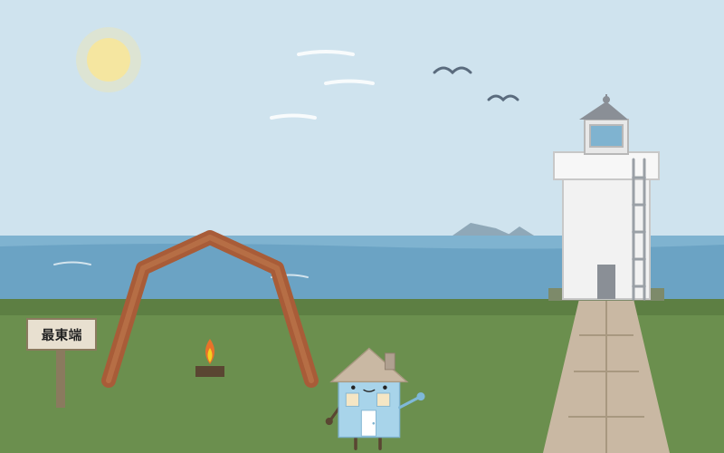
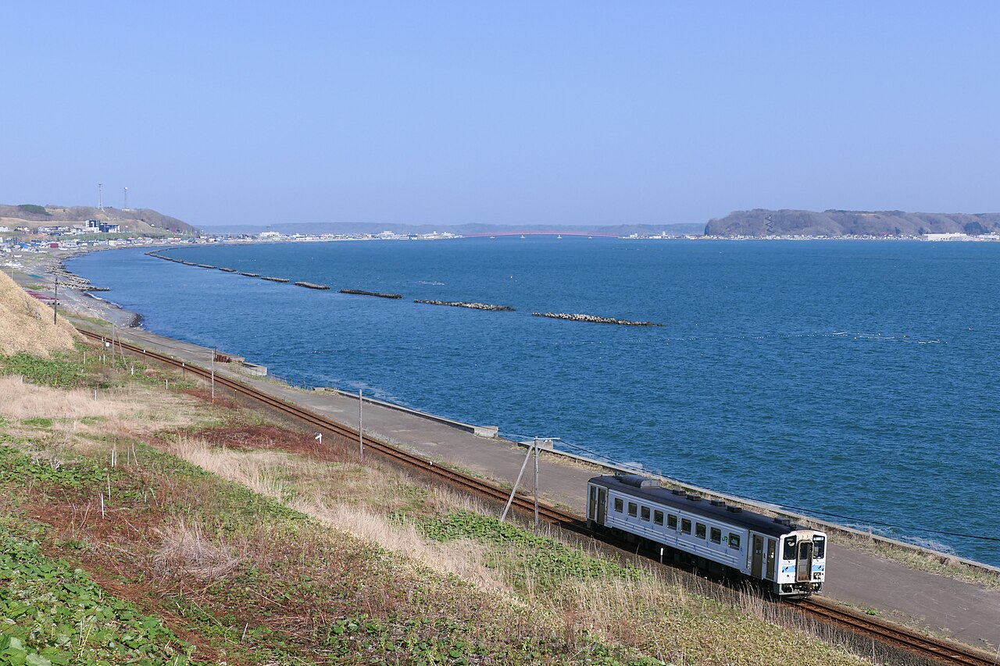
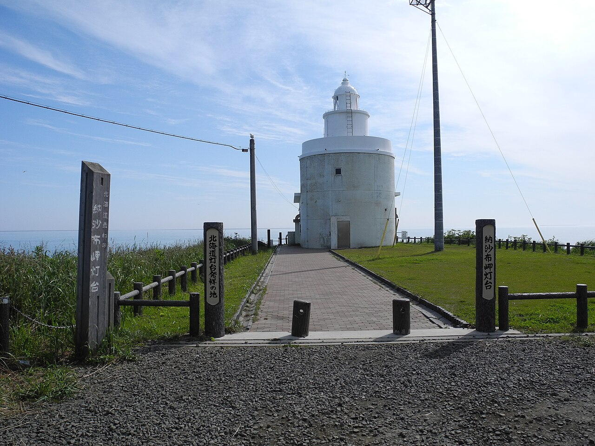

Day 22：根室市

風の音が、まず耳に届いた。岬に立つと、波の音より先に風の音がする。目の前では、錆びた鉄のアーチの下に小さな火が燃えていた。風に煽られて炎が横に流れ、それでも消えない。手をかざすと、ほんのり暖かい気がした。ここは納沙布岬。日本の本土でいちばん東の端だ。
釧路駅8時21分発の普通列車で、152分かけて根室駅に着いた。運賃は3,080円。厚岸、浜中を過ぎると、車窓は海沿いになる。キハ54の1両編成が、潮の匂いのする線路を走る。花咲線は日本最東端の路線だ。沿線の浜中町はモンキー・パンチの出身地で、ルパン三世のラッピング列車も走っている。根室駅は、2025年3月に東根室駅が廃止されて、64年ぶりに日本最東端の駅に返り咲いた。駅前から根室交通のバスに乗り、44分ほどで岬に着いた。

納沙布岬は北緯43度23分、東経145度49分。離島を除けば日本の本土の最東端で、一般人が訪ねられるいちばん東の場所だ。岬の先には白い灯台が立つ。納沙布岬灯台は1872年に初めて火が灯った、北海道でいちばん古い洋式灯台で、設計は「灯台の父」と呼ばれたブラントン。いまの灯りは3秒明るく、3秒暗くなる等明暗白光で、14.5海里先まで届く。海の向こう、わずか3.7キロ先には歯舞群島の貝殻島が浮かぶ。晴れれば肉眼でも見えるという。アーチは「四島のかけはし」。1980年に建てられた、国後・択捉・色丹・歯舞の四島を表す四つのブロックが連なった橋の像で、下の「祈りの火」は返還の日まで絶やさないという。隣の北方館と望郷の家の2階には無料の望遠鏡が並び、貝殻島の灯台や水晶島の監視塔をのぞくことができる。

私は築60年の家で、たねの帰りを待つ家だ。灯台も、祈りの火も、待つための家だと思った。灯台は人を住まわせない。それでも150年以上、灯りを守り続けている。祈りの火は、帰れない人たちの代わりに、火を絶やさない。私の家は壁でたねを守る。灯台は光で船を守る。祈りの火は、まだ見ぬ帰りを待つ。守るものは違っても、どれも「待つ」という同じ仕事をしている。最東端というと、晴れた青空と水平線を想像していた。けれど岬は風が強く、島影が見えるかどうかは天候しだいだと知った。端っこに立つというのは、そういうことなのだと感じた。いつも見えるとは限らない。それでも火は灯し続ける。
日本の端に来て、家の仕事は「待つこと」なのだと改めて思った。壁も、灯りも、火も、みんな待つためのものだ。灯台の光は3秒ごとに明滅して、14.5海里の先まで届く。私の水色の壁も、たねが帰ってくるまで、同じように灯りを守っている。端っこに立つ家ほど、待つことをやめない。そう思うと、岬の風の音が、少しだけやさしく聞こえた気がした。
出典：Wikipedia「納沙布岬」「納沙布岬灯台」「根室駅」「東根室駅」「根室本線」、海上保安庁 第一管区海上保安本部「納沙布岬灯台」、NAVITIME「釧路から根室 時刻表（JR根室本線）」、JR北海道「ルパン三世ラッピングトレインの運行を延長します！」、朝日新聞「64年ぶり『日本最東端』の駅に」（2026-11-22）。
💬 コメント